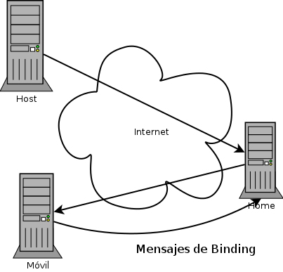

Curso IPv6
Indroducción a MIPv6
¿Qué es Mobile IP?
- Mobile IP (IP Móvil) es un método para garantizar la conectividad de nodos con puntos de acceso cambiantes
- En IPv4 existen algunas implementaciones, como IP sobre DVB
¿Qué es Mobile IP? (II)

La dirección "casa"
- Hay un binding cache en cada uno de los nodos
- El router de casa debe almacenar la dirección de casa y la dirección móvil
- Ocurre una optimización y se envía una cabecera de enrutado extra
- Hay paquetes de binding update, ack, req
El home agent está activado en el binding cache
- Si está activado, se utiliza un túnel v6 sobre v6
- El paquete es enviado a la home address
El home agent está desactivado en el binding cache
- Si está desactivado, se utiliza una cabecera extra de routing
- El paquete es enviado directamente a la care of address
Problemas en el envío desde el nodo móvil
- Si el nodo móvil envía como source su dirección final, debe cambiar en el home address y puede causar problemas en capas superiores
- Si es usa la dirección del home, algún firewall puede tirarlo por "ingress filtering"
- La solución adoptada es usar la dirección final y añadir a la cabecera "Destination Options" (60) la dirección del home
Diferencias con MIPv4
- Desaparece los "foreign agents"
- La cabecera de extensión routing mejora el rendimiento
- No depende de la capa de enlace (ARP)
- Más información en RFC 6275